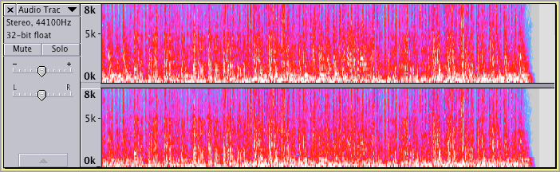
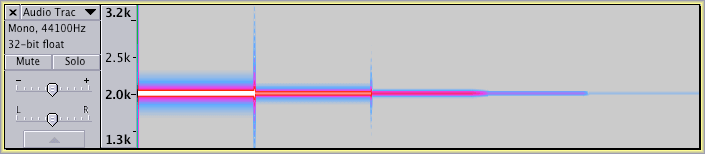
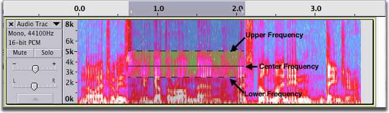

Spectrogram View
From Audacity Manual
|
Spectral Selection is active whenever you are in Spectrogram or Spectrogram log(f) view. A spectral selection is a boxed vertical selection of frequencies within the horizontal time selection. Spectral selection is used with special Spectral edit effects to make changes to the frequency content of the selected audio. |
Comparing Waveform View to Spectrogram View
Here is a stereo music recording in waveform view:
Here is the same recording in spectrogram view:
- 
What the Colors Mean
To demonstrate how the various settings affect the appearance of an audio track in spectrogram view, we will start with this artificially constructed test track. It consists of five segments of a sine wave tone at 2000 Hz, each 2 seconds long. The first segment is at a level of -10 dB, the second at -30 dB, and subsequent segments at -50 dB, -70 dB and -90 dB.
This is how the track appears in waveform view.
This is how the track appears in spectrogram view, using the default settings.
The default settings are:
- Window size: 256
- Window type: Hanning
- Minimum frequency (Hz): 0
- Maximum frequency (Hz): 8000
- Gain (dB): 20
- Range (dB): 80
- Frequency Gain (dB/dec): 0.
What do these settings mean and how to they relate to what you see on the screen?
As you can clearly see, the minimum and maximum frequency settings determine the minimum and maximum frequencies displayed, as indicated in the track vertical scale.
Gain can be said to increase the "brightness" of the display. It does this by amplifying the signal by the indicated amount. With the default setting of 20 dB, any frequency band that originally had (before amplification) a level of -20 dB or greater (and now, after amplification has a level greater than 0 dB) will be displayed as white. Similarly the "lower" level bands will also "get brighter".
There are six color bands in spectrogram view: white, red, magenta, dark blue, light blue and grey. The Range setting determines the spacing between colors.
With the default settings of Gain = 20 dB and Range = 80 dB, the colors correspond to the following levels:
- anything above -20 dB is indistinguishably white (the tone at -10 dB in the image above is white)
- levels from -40 dB to -20 dB transition from red to white (the tone at -30 dB in the image above is light red)
- levels from -60 dB to -40 dB transition from magenta to red (the tone at -50 dB in the image above is magenta)
- levels from -80 dB to -60 dB transition from dark blue to magenta (the tone at -70 dB in the image above is bluish purple)
- levels from -100 dB to -80 dB transition from light blue to dark blue (the tone at -90 dB in the image above is light blue)
- anything below -100 dB is grey.
Time Smearing and Frequency Smearing
If this is a pure tone, why does the spectrogram show energy at frequencies between 0 Hz and 5000 Hz?
Spectrogram view uses the Fast Fourier Transform (FFT) to display the frequency information versus time. There is an inherent trade-off between frequency resolution and time resolution. When using the default window size of 256 the spectrogram is drawn quickly, but the frequency resolution is not so good.
The image below shows the time smearing at the start of the track.
Changing the Window Size to 2048 and displaying the entire track results in this view of the track.
We can see that the frequency resolution has increased. That is, there is much less "frequency smearing" with the larger window size. Note that the "spikes" every two seconds are the result of the discontinuities created when joining the segments of tone at different levels.
Looking at the first 0.04 seconds of the track, we can see the the "time smearing" has increased with a window size of 2048 compared to 256.
You can zoom in on the vertical (frequency) axis.
After zooming in, the vertical ruler changes to allow greater precision of the scale.
- 
Effect of Different Window Types
In the case of this particular test track we can get even better frequency resolution by changing the Window Type to Blackman-Harris
Changing to a rectangular window causes the track to be redrawn faster at the expense of very bad frequency smearing. Note that this is still at a window size of 2048.
Spectrogram log(f) View
Choosing Spectrogram log(f) from the Track Dropdown menu will display a logarithmic vertical scale. Here is a music track displayed in Spectrogram log(f) view with the default settings of: Window size of 256, Window type of Hanning, Minimum Frequency 0 and Maximum frequency 8000.
Different settings can improve the visibility of certain elements in the recording. In the image below the settings were: Window size of 2048, Window type of Hanning, Minimum Frequency 20 and Maximum frequency 22000.
Spectral selection
To define a time range combined with a spectral range, hover at a vertical position that you want to be the approximate center frequency to act on then click and drag a selection horizontally. A horizontal line appears beside the I-Beam mouse pointer that defines the center frequency.
Drag vertically (with or without continuing to drag horizontally) to define the bandwidth (range of frequencies) to be acted on. A "box" containing a combined frequency and time range is now drawn in a yellowish tint as shown below:
- 
The frequencies in the spectral selection can then be filtered in various ways, affecting their amplitude, using the special Spectral edit effects in the Effect Menu. This can be useful to remove unwanted extraneous noises from the audio or to apply very specific tone quality changes to it. For full details, see Spectral Selection.